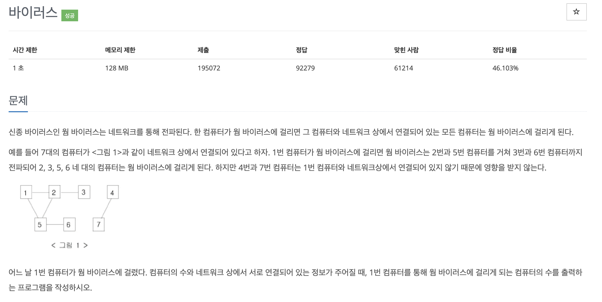
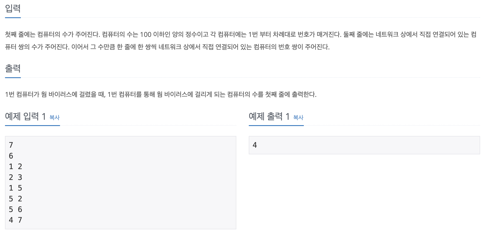

#INFO
 
#SOLVE
인접리스트 방식을 사용한 재귀 DFS 알고리즘을 사용해 풀이했다.
main 함수에서 nodeList에 정점 (컴퓨터 정보) 과 연결된 간선 정보를 입력한다.
또한 문제의 요구사항은 1번 컴퓨터와 연결된 컴퓨터 노드의 수 이기에, 1번 컴퓨터만 DFS 로직을 실행한다.
int main()
{
// Input Logic
ios::sync_with_stdio(0);
cin.tie(0);
cin >> computer_num >> computer_line;
for (int i = 0; i < computer_line; i++) {
cin >> node1 >> node2;
nodeList[node1].push_back(node2);
nodeList[node2].push_back(node1);
}
// Recursive DFS Logic
recursive_dfs(1);
...
}
재귀를 사용한 DFS 로직이다.
1번 컴퓨터와 연결된 노드를 루프를 돌며 연결된 컴퓨터를 모두 카운팅한다.
void recursive_dfs(int cur) {
cnt++;
isVisited[cur] = true;
for (int i : nodeList[cur]) {
if (!isVisited[i]) {
recursive_dfs(i);
}
}
}
그래프 탐색 관련 알고리즘에 대한 지식이 있다면 어렵지 않게 풀이할 수 있었던 문제였다고 생각한다.
#CODE